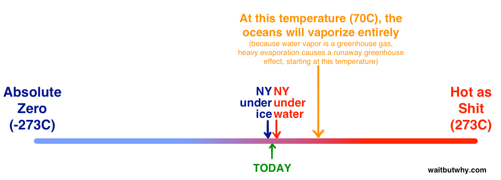
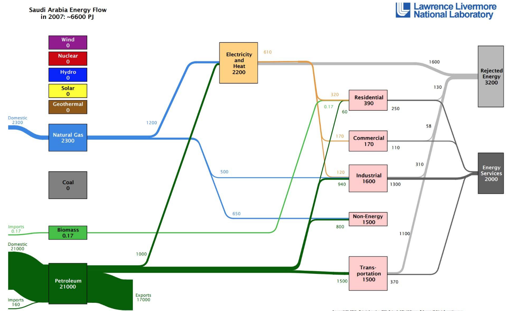

相信到了今天大多数人都已经不再是第一次听说特斯拉了，是的，是电动汽车品牌特斯拉，不是怪兽哥斯拉。访问特斯拉的官网，我们可以看到他的slogan：加速世界向可持续能源的转变。那么从今天开始我们将通过三篇文章来带大家了解特斯拉是如何改变世界的。
能量的故事
汽车的故事
特斯拉的故事
我们首先从能量和能源的大背景开始说起。

能量的重要性不言而喻，没有能量的话我们会是像下面这样死翘翘的:
那么究竟什么是能量呢？来自百度百科的定义是这样说的：能量（energy）是质量的时空分布可能变化程度的度量。这样的定义看上去太学术也太难理解，让我们简单的从字面上来看，能量就是用来度量物体或系统做功能力的一种度量。度量能量大小的单位是焦耳，1焦耳在力学上指的就是在没有摩擦力的情况下将一个1千克的物体拖动1米所做的功的大小。
根据能量守恒定律，能量既不会凭空产生，也不会凭空消失，它只会从一种形式转化为另一种形式，或者从一个物体转移到其它物体，而能量的总量保持不变。对于生物来说，既然我们不能凭空的创造出能量，那我们势必需要从外部攻取相应的能量来满足日常生命活动的各种需求。地球上的生物最主要的能量来源之一就是太阳，由于有太阳提供的巨大能量才有了风，雨，雷，电等自然现象，才有了我们的生物圈。由太阳所提供的能量给所有的生物带来了光和热，当植物通过光合作用将太阳提供的能量转换为生物可以获取和吸收的食物的时候，我们的生物圈就有了一切能量的来源。
植物所擅长的也是其本能的作用就是将太阳提供的能量转换为食物。从植物开始，所有的生物之间就开始互相残杀来从他人身上掠夺能量。我们用“食物链”这种婉转的说法来称呼这种谋杀和掠夺的周期性过程，用“吃”来表示这种从他人那里获取能量并危害之的过程。作为食物链上端的捕食者，无时无刻不在惦记着下层猎物所能提供的能量。只有植物可以从这种对他人的捕杀中解脱出来，因为有一个大方的干爹太阳可以源源不断的提供给它能量，而人类作为食物链的顶端生物，就像生态圈的教父一般，会在任何时候任何地点从任何其它低端猎物上获取我们所需要的任何东西。这不是一个完美的系统，不过事实证明它确实可行。
这样的食物链和生态圈稳定的运作了很长一段时间，直到数百万年前，人类意识到与其仅仅的将这些能量摄入身体，是不是有更有意思的利用能量的方法。要是可以利用这些能量的话结果要比只是通过身体来吸收能量来跑得更快或更强壮有力要有意思的多了。聪明的人类于是开始想办法怎么样可以留住这些能量来为己所用：
人们在平时的生产生活中发现，并不仅仅是生物体内存在能量，大自然中的风，水等也都蕴含着巨大的能量，于是我们开始想办法利用这些能量。人们制造了风车，用来将风的能量转换为机械能，制造了帆船来将风的能量转换为动能；水在蒸发过程中将太阳能转换为势能，而变成了雨降落下来的时候又将势能转换为了动能，人们便又制造了水坝和水轮机来获取水中所蕴含的能量。
在这之后，人类所发现的最值得兴奋的能量获取的方式是燃烧东西。在风和水的变化和移动过程中我们只能短暂的获取少量的能量，而通过燃烧我们可以一次性大量的释放出物体内所蕴含的能量，这是一种能量的爆炸，我们把这种爆炸称为火，由于燃烧可以释放出大量的光和热以为人们所用，烧东西开始变成了一种非常普遍的人类活动。
在此之前人类对于风能和水能的利用已经相当的得心应手了，但是当面对火所能带来的能量还不知道如何驾驭，原始的人类只知道围坐在火堆旁取暖，用火来煮熟食物，在时的人类面前，火就像是一头未被驯服的龙一样捉摸不定。直到有一天，人们发现了蒸汽。
火的能量很难直接被利用，但是当人们把火作用于水的时候神奇的事情发生了，在烈火的作用下水分子感到越来越焦虑不安，它们开始翻滚，直到最后这些分子将恐慌到极点，再也受不了了，它们开始脱离水面，拼了命的向上蒸发，这时候我们实际上已经将难以驾驭的火的能量转换为了一种有可能直接控制和利用的能量来源：水蒸汽。
由水蒸汽所带来的强大力量，18世纪的发明家们就开始了很多新的发明创新，而真正的重大突破，被认为是人类历史转折点的事件是发生在19世纪的伟大发明：蒸汽机。
试想一下家里的烧水壶中的水快开的时候，水壶的盖子被被沸腾的水面所蒸发出的水蒸汽的作用力推动得上下震动，而水壶的壶嘴由于有大量的水蒸汽想要从那里挤出来而发出了哨声，那么假如我们把这些水蒸汽都收到到一个汽缸里汽缸的一端联接着一个活塞，那么当我们给汽缸注满水蒸汽的时候，活塞会被推动，而将水蒸汽释放之后活塞又会复位，不停的重复这样的动作我们就可以得到一个循环往复运动的活塞装置，这就是蒸汽机的基本工作原理。我们把活塞的另一端连接到一个控制杆，杆的另一端链接上轮子，那么我们就可以制造出简单的蒸汽机车了。
通过使用这样的蒸汽机，人们制造出了替代原先的帆船的轮船，制造出了比马车更先进的汽车。由于蒸汽机所带来的生产力的提高人们将更多的东西运输得更远更快，工厂的生产效率也有了极大的提高，沸沸扬扬的工业革命由此迅速开展。有人认为工业革命是由蒸汽所提供的动力带来的，而事实上，蒸汽只是一种中间产物，真正的动力来源是火，蒸汽机的发明是人们找到了驯服火这头能量巨龙的方法。
人类发展到了工业革命这个阶段，由于需要燃烧产生的火来提供大量的动力，那么势必导致我们需要比之前的社会多的多的燃料。在此之前人类需要生火的时候，只需要找来一些木头点燃就可以，但是时间来到了19世纪，木头燃烧所带来的能量已经远远不足以提供工业化所需要的动力了。
在英国，人们发现了一种可以燃烧的黑色石头，我们称之为煤。不过煤并不像木头一样如此简单的就能在地表获得，煤总是蕴藏在地底，于是英国人开始从地底挖掘煤，因为他们需要更多的能源，随着工业革命的延续和扩张，很快这种能源采集活动扩张到了整个欧洲甚至美洲。伴随着对地底煤炭的挖掘，人们发现了另外的可以提供能量的可燃物，一种气体我们称为天然气，一种液体我们称为石油，人们开始疯狂的采集这些埋藏在地下的能源，这种心情就像是一只小狗原本只想在树林里挖个小洞埋藏自己的骨头，没想到突然挖到了一个藏有大量猪肉的地窖一般。
那么这样的一只小狗会怎么做呢？他会停下来思考如何合理的分配和利用这些猪肉吗？不会，他会毫不客气的开足马力放开大吃特吃并在上面拉自己的狗屎。一整个19世纪，到处都在兴建煤矿和石油钻塔，伴随着这些新能源的消耗，经济得到了迅速的腾飞，一批先进的技术也随之诞生。
在蒸汽机得到大力发展之时，电力革命始终也在进行，直到19世纪80年代，电力才被广泛的应用。电力的发展使得人们可以将燃烧所产生的粗放的能量转换为可以精细使用的称之为电能的能量，这种能量可以通过有组织的电网进行远距离的传输，可以传送各种政府、商业建筑，也可以传送到寻常老百姓的家里，电能所带来的巨大便利是它可以被方便的转换为其它形式的能量，它可以烧开水，也可以冻结冰，可以照亮整个房间，也可以通过它来打个电话。如果之前把蒸汽机比作是驯龙的缰绳的话，那么电能的使用则像是把这头龙驯服成了一个神奇的管家，可以永远为我们人类服务。
在能源革命发生的这段时间，另外一项革命也正在起步。这时候火已经是我们的轮船，火车，工厂的动力来源，而新型能源电能也已经开始渐渐普及，但是人类个人的交通发展还和18世纪没什么两样，主要还是由干草驱动的，直到19世纪末期，人们开始发现实际上我们可以做的更好。于是人们开始设法用金属”马”来代替传统的生物马来帮助人们出行，而这种金属”马”的核心也是类似于蒸汽机的汽缸。
随着煤炭、石油和天然气所带来的空前的革新，由此引发的技术革新浪潮也是前所未有的，尤其在这些能源的挖掘和开采方面。得益于在这些地下能源挖掘和开采方面的专注，像洛克菲勒标准石油公司这样的企业也迅速的发展成为世界上最大的企业帝国。这是一个新的世界，看上去一只幸福的小狗正在从洞穴里拉出无穷无尽的猪肉。
时光飞逝，一转眼就到了现如今。虽然距离使用地底发现的这些燃料作为能源的技术革新已经过去两三百年了，但是时至今日这还是人类获取能量的最主要方法。
还是拿狗的故事来打比方的话，只要洞穴里还有好吃的东西，它将一直呆在里面，直到食物耗尽或者它自己得病或者老死了。在我们继续沉溺于伴随着这些能源的发现带来的巨大技术革新而日渐繁荣发达的所谓现代化社会的美好生活的同时，我们是否也应该开始考虑是这些能源先耗尽还是我们人类先灭亡？但是实际上，当我们意识到这一点的时候，正如洞穴里的狗，或许已经成长的太大了，要是回到洞穴外面已经没有足够的食物可以满足它的胃口了。
我们已经可以在很多方面感受到现代社会人们对能源问题的顾虑和担忧，但是很少有人可以真正的说清楚这些问题，很多人出于经济利益的考虑，也有很多人出于政治利益的考虑，在能源问题方面的站队并不一定是特别客观的，这给原本就不是特别清晰的问题添加了更多人为制造的复杂。
那么下面就让我们来列举几个已知的我们需要面对的能源的问题，了解一下这其中到底是怎么回事。
在开始之前，我们先弄清楚一个概念，什么是化石燃料？
化石燃料之所以称为化石燃料是因为它们实际上是古代生物的遗体化石而成。这里所说的古代所涵盖的范围非常的广。已知的化石燃料的最早来源可以追溯到前寒武纪了，那个时候陆地上还没有什么动植物，这些燃料则来源于那时的海藻类生物。平常人可能总是把化石和恐龙联系到一起，但实际上恐龙在地球上生活的时间对于漫长的地球史来说也只是一小部分时间，我们现在所使用的化石燃料的最大的来源是石炭纪(距今3亿年左右)的生物。因为那个时候地球上有很多大面积的沼泽地，而沼泽则是保存生物遗体中的有机体可以得到保留的很好条件，使得它们所蕴含的能量可以很好的在地底下留存至今。
在过去的亿万年间，这些生物全被地热和地动作用挤压，变化成了我们现在所知的这些固体、液体或气体形式存在的可燃物，分别叫作煤炭，石油和天然气。快速的了解一下百度百科对于这三种能源物质的定义：
化石燃料也称矿石燃料，是一种烃或烃的衍生物的混合物，其包括的天然资源为煤炭、石油和天然气等，是由死去的有机物和植物在地下分解而形成的，是不可再生资源。
煤炭是古代植物埋藏在地下经历了复杂的生物化学和物理化学变化逐渐形成的固体可燃性矿物。是一种固体可燃有机岩，主要由植物遗体经生物化学作用，埋藏后再经地质作用转变而成，俗称煤炭。是这三种能源物质中最丰富和最便宜的，所以它常被用来发电。但是它同时也是地球上二氧化碳排放的最主要来源，在释放相同热量的情况下，它的碳排放比石油多30%，是天然气的两倍。目前中国是世界上最大的煤炭消耗国，近年来几乎一半的煤炭是在中国被烧掉的。
石油，地质勘探的主要对象之一，是一种粘稠的、深褐色液体。地壳上层部分地区有石油储存。主要成分是各种烷烃、环烷烃、芳香烃的混合物。石油的成油机理有生物沉积变油和石化油两种学说，前者较广为接受，认为石油是古代海洋或湖泊中的生物经过漫长的演化形成，属于生物沉积变油，不可再生；后者认为石油是由地壳内本身的碳生成，与生物无关，可再生。石油主要被用来作为燃油和汽油，也是许多化学工业产品，如溶液、化肥、杀虫剂和塑料等的原料。美国是迄今为止世界上最大的石油消费国，大约消耗了世界上20%的石油，这个规模是排在第二位的国家的两倍，同时美国也是世界上最大的石油生产国之一，另外两个国家是沙特和俄罗斯，这三个国家的石油产量相当。
天然气，一般认为天然气是地下的石油达到一定的温度蒸发而形成的，通常也在地下的石油储存点被发现。天然气是这三种能源中相对最清洁的，在国外天然气也是一般人家供暖和生活的能量来源，它也被用来发电，尤其在美国，20%的电力来源于天然气。目前全世界的天然气的使用量正在上升，差不多已经占了所有能源物质使用的四分之一，这利益于近年来在天然气开采技术上的重要突破。
在能源问题上的争论主要体现在两点，一个问题是大量的碳排放所引发的气候变化问题，另一个问题是这些化石燃烧是会耗尽的。
问题一：气候变化
在谈到气候变化的时候，我们需要撇开那些政客们，教授们，企业家们或是导演们的观点，来专注于下面三个事实。
事实1）化石燃料的燃烧使得大气中的二氧化碳含量上升
稍后我们会用数据来进行说明，在此之前先来了解下为什么燃烧化石燃料会产生二氧化碳？
简单的答案就是：燃烧和光合作用是相反的。
植物在生长的时候，会通过光合作用来给自己制造养分。简单的看光合作用的过程就是植物从空气中获取二氧化碳，然后在光照的作用下，将二氧化碳中的碳元素提取出来生成有机物储存在体内，而把氧气作为废弃物排放出来。所以本质上看木头就是一堆储存着化学能量的碳。
当我们把一块木头点着的时候，发生的事情其实和光合作用是相反的。通常情况下，空气中的氧气只是在木头里的碳分子外面活动，所以正常情况下树木并不会自燃。但是当氧分子运动的足够快的时候会进入到木头中和碳结合，组成新的二氧化碳分子，同时释放出原本蕴含的能量，而蕴含的能量又使得周围的氧气分子加速运动，进一步和其它的碳结合，从而生成更多的二氧化碳释放出更多的能量，这是一个连锁反应，这个时候我们从外部看就是这块木头被点着了。所以一块木头燃烧的过程看上去和光合作用是相反的，它会吸引空气中的氧气，排放出二氧化碳。
当然，早期人们在这个过程中并不关心排放出来的气体是什么，我们只在乎可以通过这个过程得到我们想要的光和热。一棵树经过多年的成长从大阳获取的能量在它被点着的那一刻被一瞬间的重新释放出来。换句话说，光合作用像是绑架了空气中的碳原子和太阳能，经过很多年之后，当它被点燃时，碳原子和太阳光能都得到了自由，碳重新变会了二氧化碳，而太阳能则变成了火。
由此可见，燃烧木头并不会改变空气中的碳含量，因为从一开始这些碳就是树木从空气中获取的，燃烧只不过是一个重新将其释放出来的过程。碳从大气进入植物体内，燃烧变成二氧化碳重新回到空气中，烧成灰进入土地和水中，这个过程称为碳循环。在任何给定的时间，地球上的碳循环中所有的碳的总量是不变的，燃烧一块木头并不会改变碳的含量，只是把它从一种形式变成了另一种形式。
但是有些时候在循环的过程中碳会有所缺失，就是当植物和动物死亡之后没有得到正常的分解，他们体内继续留在了这些碳和能量，被一直埋藏在地底。随着时间的推移，日积月累的这些埋藏着的碳越来越多，到今天为止，所发现的这些化石燃料当中就包含了亿万年来所积累的这些从原先的碳循环过程中偷跑出来的碳。
当人们发现这些地底的碳的时候，我们的眼光并没有停留在碳上，而是将重点放在了燃烧它们所能释放的能量上，积累了亿万年的能量，多么让人兴奋和无法抗拒。当我们释放出当中的巨大能量，在我们的日常生产生活中被转换为电能，机械能等等可以提高我们生活品质的能量的同时，当中蕴含的碳也被不断的排放出来。
1958年科学家Charles Keeling开始在夏威夷冒纳罗亚火山观测站测量大气二氧化碳水平，这些测量至今仍在进行，下面是他们的一些观测结果：

我们可以明显的看出二氧化碳在空气中的含量随着时间在变化呈现明显的上升趋势，之所以会以实际中红颜色的折线图所表示的那样上下来回的摆动，是由于这个数据是具体到月份的，而空气中的二氧化碳含量在不同的季节是不同的，主要原因是测量地点植物是以落叶植物为主，春夏时节枝繁叶茂的时候空气中的二氧化碳含量会偏少一点，秋冬时节叶子都落光了自然光合作用也少了，那么空气中的二氧化碳含量就上升了。通过冰钻技术科学家们还收集到了过去40万年间的二氧化碳含量的变化，下面这幅图是他们的发现：

可以明显的看出，在过去的很长一段时间，二氧化碳含量都在180至300之间，几乎不会超过300，但是近年来突然间上升，已经接近400。因此目前的大气环境中，碳含量已经不再是以前稳定的0.02%至0.03%左右了，而是0.04%，并且有继续上升的趋势。我们这里不去轻易的下其它的判断，只要知道一个事实就可以了，就是空气中二氧化碳的含量水平上升的很快。
事实2）随着二氧化碳含量的升高，气温也在上升
通过冰钻技术，科学家们获取的不仅仅是二氧化碳含量的变化数据，同样的也获得了温度变化的数据，下图是他们的发现：
从图上不难看出空气中的碳含量和温度存在一定的相关性。原因很简单，二氧化碳是一种温室气体。温室的原理是让阳光照射进来并留住其中的热量。在我们的大气中有很多元素都起着类似这样的作用，吸引并保留太阳的热量。火星的平均温度是零下55摄氏度，看上去很糟糕，但是金星的平均温度更是地狱般糟糕，达到了462度。这并不仅仅是因为金星离太阳更近，而很大程度是取决于这些行星在大气层，火星的大气层相对稀薄，所以热量很容易散失，而金星的大气层相对厚实，特别是二氧化碳的含量比地球高300多倍，所以对热量的保留起到了很大的作用，因此即便是水星离太阳更近，但是由于大气稀薄，它的平均温度低于金星。在白天的时候，水星和金星差不多都非常的炎热，但是到了晚上水星会相对的很快的冷却下来，而金星的热量被像棉被似的大气层保留了下来。
所以空气中二氧化碳的含量对温度是有影响的，那么这样的影响到底有多大呢？相对于工业革命之前的平均温度，我们目前的温度上升了一度左右，大多数科学家预测温度还将继续上升。由1300多名来自不同国家的独立科学家组成的联合国的政府间气候变化专门委会所支持的一些独立的气温保护的实验机构对于未来的气温变化作了分别的预测，如果不采取任何措施，地球的平均气温会如何变化：
少数人认为这个预测被夸大了，他们指出空气中水蒸汽的含量增加也是导致气温上升的原因，而实际上单单二氧化碳的增加并不会对温度造成如此大的影响，而是一种相互作用的反馈机制导致的，比如二氧化碳的增长让温度上升了一点点，而这一点点又使得水的蒸发量多了一点点，而这些一点点就构成了明显的影响。不过即使是这样的观点，也没有否认二氧化碳排放的增加是温度上升的原因。
政府间气候变化委员会认为二氧化碳含量和温度的变化90%都是由于人类活动的原因造成的，这其实类似于废话，就像是说雷雨90%是由云的活动造成的一样。接下来我们的问题实际上是想要知道温度要变化多少才会对让我们的世界变得糟糕呢？
事实3）气温只需要很小的变化就会让一切变得糟糕。
差不多1.8万年前，世界的平均温度要比现在低5度左右，就这5度已经足以让加拿大，英国和美国的一半被覆盖在半英里厚的冰面下。

1亿年前，那时候地球的温度差不多比现在还要高6-10度，那时候地球上几乎到处都是热带，没有地方有常年不融化的冰川，海平面差不多要比现在高200米，地球上生活着下面这货：

所以我们现在所生活的还算不错的环境其实是一个很敏感的小窗口：
而实际上这样的敏感程度比我们在上面这幅图上看到的要脆弱的多。因为平均温度的微小变化在某一点的最高或最低温可能已经有了很大的变化。而如果某一天某一地方的最高温度可以达到58度的话，那基本上现有的动植物都无法生存。另一方面温度能变化的区间实际上是挺大的，我们已知的绝对零度是零下273度，所以那些使几乎整个半球都冰冻住的5度的温度变化用百分比来衡量的话并不是10%，而只是1.5%左右的变化。所以下面这幅图或许更直观：

上文已经提到，目前我们的平均气温已经升高了1度了，科学家们在具体上升多少度会带来灾难性的事件上仍有一些争论，在过去的20年间差不多有100多个国家认为我们应该将温度上升控制在2度以内，有些研究认为高于2度也并不一定会有很严重的事情发生，而也有一些研究认为2度已经太高了。而关于我们是否能够将气温升高控制在2度以内也存有一定的争论，有人认为我们采取一些控制碳排放的措施可以做到将气温升高控制在2度以内，而有人认为即使是我们停止碳排放，由于之前累积的趋势在未来几年平均温度的升高也会超过2度。
那么我们应该怎么做呢？我们要做的并不是在上述这些观点之间进行深入研究或是开展辩论以求找到真相，因为对于未来没有人可以保证可以做出准确的预测。我们在这里也不谈具体的影响，比如海平面上升，污染增加，风暴增多，北极熊灭绝等，我们只想把上面提到的三点事实结合起来看一看我们的世界正在发生什么：
把三个事实的前因后果进行联系和精简后我们得到：化石燃料的烧烧让世界变得糟糕
结论有点意思，我们可以对此持保留态度，但是如果像下面这样描述的话或许会更合理一点：
如果我们继续肆无忌惮的使用化石燃料，世界将会很快变得糟糕。
知道了这一点之后，我们接下来再来聊一聊关于化石燃料的第二个问题：
问题二：化石燃料是会耗尽的
曾经很长一段时间我认为这些埋藏在地底或海底的化石燃料是取之不尽用之不竭的，正如19世纪人们刚刚发现这些燃料一样，而现在一些人还是这么认为的，毕竟我们还无法想象在茫茫大洋底下还有少未勘探出来的储备。但是实际上，地球上的化石燃料是会枯竭的，而且距离它们被消耗完的日子并不是太久远。
正如下面这幅可以在一些新闻报道中被引用的示意图那样，可以看出，以2013年为起点的话，煤炭还有113年就用尽了，天然气还有55年，石油还有53年。
下面这个图表是援引美国中情局关于世界概况的描述，实际上在石油和天然气耗尽之后，煤炭的使用会巨增，从而撑不到113年。
有一些别的网站的观点是这些对于化石燃料还能使用多久的预测都是基于目前已经探明的储量，而实际上我们每年还会发现新的化石燃料来源，比如在海床下的沥青沙或甲烷水合物中所蕴含的石油，我们会开发出新的技术来获取这些石油，这样来算的话几个世纪之后也不会用尽。即便是全球的化石燃料的总储量是有限的，我们对剩下的燃料的开采和利用也会变得越来越困难，所需要投入的成本也会越来越高，所以最终也无法用尽那些最后的燃料。
这些能源物质耗尽所带来的问题就是如果那个时候我们的社会还是高度的依赖这些能源的话，那么整个社会经济的崩塌将不可避免，物价会飞涨，而到那时我们再来开发新的可再生能源的话或许为时已晚。所以我们最好在这些不可再生的化石能源被耗尽之前想到更好的办法。
在不久或很久的将来，由于化石燃料的枯竭我们别无选择，只能停止目前基于这些能源的一切社会活动的话世界将会怎么样？我们这一几代人所生活的纪元会被看作是化石燃料纪元。
根据文章第一个问题的结论，如果我们继续肆无忌惮的使用化石燃料，世界将会很快变得糟糕。 我们将在图中黑的部分停留很长的时间直到能源耗尽，而那个时候我们留给后人的或许已经不是图上这么广阔的黄颜色的部分了，他们的世界将会一团遭。
化石燃料时期的延长是人类历史上做的最愚蠢的实验。更多更大的这种化学反应会对我们的大气和海洋造成更深远的影响，既然我们知道这种化石燃料终有用尽的一天，而使用它们对我们的环境所造成的是恶劣的影响，我们为什么一定要等到它们都用完了环境都已经变得很差了才停止呢？
回到上面这个示意图，我们知道自己在这个黑色的区域，而如果我们继续研究开发这些化石能源我们在黑色区域里呆的时间会越长，而同时对黄色区域的影响越大，甚至黄色区域根本就无法到来，那么我们为什么不自己主动一点尽快的进入黄色的区域呢？
那么我们怎么样才能从黑色的区域过渡到黄色的区域呢？
为了更好的回答这个问题，让我们来引用一些美国能源局下属劳伦斯利福摩尔国家实验室的一些能源图表，这些发布于2011年的图表中有所有主要国家2007年的能源流的信息，这些图一开始看上去可能有一点混乱，但是事实上是挺简单的，这些能源流的图所表示的就是这些国家各种不同能源的使用情况。
下图表示的是2007年全世界的能源流：
单位PJ，是10的15次方焦耳。从图上大致可以看出：
石油最大的作用是为全世界的交通提供能源，在交通方面基本上94%的能源来自于石油，而这个比例在发达国家或许更高。
生物能源大多消耗在发展中国家，生物能源主要指木头啦，或者从植物中提取的一些油类。
这些能源所产生的能量有很大一部分是由于运输加工等环节的技术限制而损失掉的，也就是我们大概也只能利用到实际能源物质燃烧的四分之一的能量。
接下来我们看看法国的情况：
-交通方面和别的发达国家一样主要依赖于石油。
-法国并不是一个我们接下来要重点讨论的国家，但是是一个特别重要的国家，因为对于他们来说化石燃料和他们的政治息息相关。我们知道国家与国家之前的关系是很重要的，但是如果一个国家过度的依赖于某个或某些国家，那么对于这个国家来说不是什么好事。从法国的能源流上可以看出，他们需要大量的进口石油来维持他们的交通系统，这就会使得法国在处理一些外交关系上显得被动，掐住了石油供应就掐住了他们的咽喉。而美国，在几十年前也有60%的石油依赖于进口，但是目前已经是世界上最大的三个石油生产国之一了，根据EIA的数据，2015年美国所消耗的石油中只有21%是进口的，这当中从沙特进口的只有12.5%，而就算是从整个海湾地区进口的也只有20%，这就使得美国在处理海湾问题上拥有了更大的主动权。
再来看看中国：
中国由于近年来的高速发展，能源的消耗也是惊人的。特别是在煤炭的消耗上，几乎占了全世界煤炭消耗的一半，单单煤炭的消耗就是法国全国所有能源消耗的五倍还多。
沙特：

毫无悬念的石油一招鲜。
朝鲜，不出意料的奇怪：
让我们再来看看2013年美国的能源流。这里的单位不太一样，一Quad等于1000PJ。
-美国是一只天然气消耗巨兽，是全世界天然气消耗最大的国家。
为了直观的了解美国到底消耗了多少能源，我们可以看出世界上很多国家的能源消耗量和美国的各个联邦州差不多：
看了这些国家的能源流之后，让我们回到一开始的问题，怎么样可以从黑色的区域过渡到黄色的区域呢？国家实验室有一幅图可以看出美国的碳排放情况。美国是世界上第二大的碳排放国，中国是第一大。那么我们暂且就从美国下手，看看应该采取一些什么样的措施。
从黑色区域过渡到黄色区域意味着我们要减少和去除碳排放。图中我们可以看出两个碳排放最多的节点：
看上去要是可以减少这两个地方的碳排放那么距离我们就可以更快的从黑色区域进入到黄色区域了：一个是发电用到了大量的煤炭，还有一个是交通用到了大量的石油。
我们的文章主题是特斯拉如何改变世界，这篇我们从大环境能量和能源开始讲起，一直讲到了现在，发电和交通产生了大量的碳排放。接着我们要进入到更具体一点的问题，就是上面提到的第二个碳排放的主要制造者交通，当然了，交通包括很多方面，飞机，火车，轮船，卡车和汽车等等，但是这其中汽车的碳排放比另外几个都要多，而且到2030年由于全世界汽车总量的增加，其造成的碳排放还要增加50%左右。所以为了解决我们如何从黑色区域过度到黄色区域这整个大问题，我们需要先尝试着解决汽车的碳排放问题。
敬请期待下一集：汽车的故事。